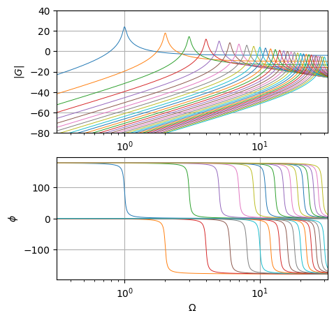

This post tries to answer a narrow question I’ve found on Physics SE, mainly about some doubts the OP1 had about standing waves — or natural or proper modes of vibration —, their definition and the role of boundary conditions in the differential problem, and response to external forcing arising from the YouTube video, Standing Waves Parti I: Demonstration, by James Dann, Ph.D.
Natural modes
Many structural problems are governed by a differential problem, whose discret(ized) counterpart is a second order dynamical system,
supplied with the proper conditions on the state \(\mathbf{u}(t)\), like initial values of the function and its first derivative for Cauchy problems (or initial value problems),
Remarks
This is a linear problem, and its solution can be written as a linear combination of a set of solutions
Proper modes: a basis for the non-trivial solution of the homogenous problem, i.e. the response of the system to a free system with no external forcing, to a non-zero initial condition
Mass matrix \(\mathbf{M}\) and stiffness matrix \(\mathbf{K}\) are symmetric, if dynamical equations are derived with a Lagrangian approach. Here a proof for rigid-body mechanical systems.
If no rigid degree of freedom exists, stiffness matrix is definite positive. If \(n_r\) independent degrees of freedom exists, stiffness matrix is semi-definite positive with a kernel of dimension \(n_r\) (or it’s \(n_r\) times singular).
If there’s no degree of freedom associated with zero-inertia, mass matrix is definite positive. Independent d.o.f.s with zero-inertia are usually associated with algebraic constraints: if corresponding d.o.f.s are not expressed as a function of the other d.o.f.s, mass matrix is semi-definite positive (with kernel of dimension \(n_c\), whose elements are the mass-less d.o.f.s; or it’s \(n_c\) times singular), and the governing equations can be written as a system of DAEs (dynamical-algebraic equations).
The modes of an undamped system, \(\mathbf{C} = \mathbf{0}\), simultaneously diagonalize mass and stiffness matrices. As a consequence of matrix symmetry, it’s easy to prove that modes are mutually orthogonal through mass and stiffness matrices
Mechanical systems with no dampers usually have small damping. This condition is treated in detail here. In the small-damping regime, damping matrix \(\mathbf{C}\) can be treated as a small perturbation of the undamped system, and two assumptions emerge as reasonable assumptions:
\(\mathbf{C}\) is semi-definite positive
modal basis \(\{ \hat{\mathbf{u}}_i \}\) makes the damping matrix \(\mathbf{C}\) diagonal
If many eigenvectors exist with the same eigenvalue, it’s possible to define an orthogonal basis of that subspace
…
String
Governing equations
The transverse displacement \(u(x,t)\) of a string with axial (tension) pre-load \(N_0\) and linear mass density \(m\) is governed by the partial differential equation
\[- m \ddot{u} + N_0 u'' = f\]
supplied with proper boundary and initial conditions. Here \(f(x,t)\) is the transverse force per unit-length acting on the string.
Natural modes
Response to motion of an extreme point (as external forcing)
Exploiting the linearity of the problem, the solution can be written as the sum of a forced and an homogeneous part,
\[u(x,t) = u_0(x,t) + u_p(x,t) \ .\]
…some words about slow and fast contributions in structural mechanics, direct truncation and mode acceleration,…
Fast part of the solution takes into account non-homogeneous boundary conditions and other external forces. It can be defined through its governing equation
or, dividing by the mass \(m\) times \(\frac{b}{2}\) and recalling that \(k_n = \frac{n \pi}{b}\), \(c := \sqrt{\frac{N_0}{m}}\) and \(\omega_n := c k_n\),
The solution of the equation for \(g_n\) can be written as the sum of the solution of the homogeneous equation and an independent particular solution \(g_{n,P}\)
\[g_n(t) = a_n \cos \left( \omega_n t \right) + b_n \sin \left( \omega_n t \right) + g_{n,P}(t) \ .\]
Sligthly damped system
Mechanical systems without any damper element usually have small damping, that can be well represented as a modal damping. Under this assumption, the modal equations become
#> Some librariesimport numpy as npfrom scipy import signalimport matplotlib.pyplot as plt#> Bode diagram of the natural modes#> Parameters of the system (non-dimensional)m, N0, b =1., 1., np.pic = np.sqrt(N0/m)xi =.02n_modes =30i_modes = np.arange(1, n_modes+1)omegas =10.**np.linspace(-.5, 1.5, 1000)fig, ax = plt.subplots(2,1, figsize=(5, 5))for i_mode in i_modes:#> Mode parameters k_n = i_mode * np.pi / b omega_n = k_n * c xi_n = xi#> Continuous-time TF (no dt is given as a third argument in signal.TransferFunction)# defined with numerator and denominator num = np.array([1, 0, 0]) * (-1)**(i_mode+1) *2./ ( np.pi * i_mode ) den = np.array([1, 2*xi_n*omega_n, omega_n**2]) sys = signal.TransferFunction(num, den)#> Evaluation of magnitude and phase of the TF of the LTI system sys# mag is in dB i.e. |G|_{dB} = 20 log_10{|G|}se w, mag, phase = signal.bode(sys, omegas)#> Plot ax[0].semilogx(omegas, mag , lw=.7) ax[1].semilogx(omegas, phase, lw=.7)G_ticks =20* np.arange(-4,3)ax[0].set_yticks(G_ticks)ax[0].set_xlim(omegas[0], omegas[-1]); ax[0].grid()ax[0].set_ylim(G_ticks[0], G_ticks[-1])ax[1].set_xlim(omegas[0], omegas[-1]); ax[1].grid()ax[0].set_ylabel('$|G|_{dB}$')ax[1].set_xlabel('$\Omega$')ax[1].set_ylabel('$\phi$')
Text(0, 0.5, '$\\phi$')

Full solution
Full solution of the problem with the prescribed motion \(u_B(t) = U \sin(\Omega t)\) reads
Both forced and free response can be re-written as the sum of a \(\sin\) and \(\cos\) contribution per each wave number. The coefficients \(A_n\), \(B_n\) of the forced response have already been evaluated above. The coefficients of the free response \(A_{0,n}\), \(B_{0,n}\) need to be evaluated with the initial conditions.
This is a system of two equations, with infinite unknowns \(A_{n,0}\), \(B_{n,0}\). While this sounds like a very under-determined system, this is not the case since the two equations depends on the continuous spatial coordinate \(x\) and thus they’re 2 infinite-dimensional equations: each equation is not just an equality, but it’s an equality that needs to hold for every possible \(x \in [0,b]\), and thus each equation prescribes infinite constraints.
Now, infinite constraints and infinite unknowns…the problem looks trickier and trickier. But it’s quite easy to solve through projection on the functions \(\sin( k_p x )\) exploiting the orthogonality of these harmonic functions on the interval \([0,b]\). This process should recall to the reader the Fourier series expansion of periodic functions. The equations become an infinite number of decoupled pairs of equations,